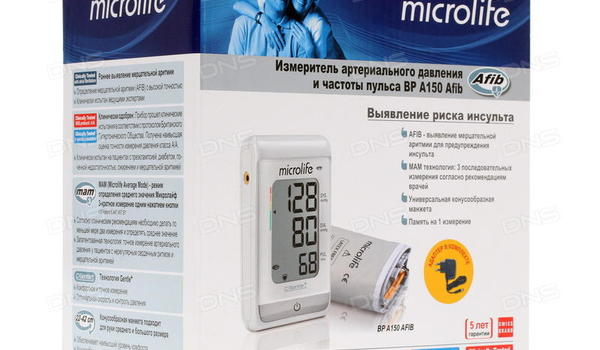

Измеритель артериального давления BP A150 c адаптером

- 
Измеритель артериального давления BP A150 c адаптером
Автоматический тонометр Microlife BP A150 Afib с фиксацией манжеты на плечо - это современный прибор, разработанный в сотрудничестве с ведущими кардиологами мира. Одно из основных предназначений прибора состоит в выявлении на ранней стадии опасного заболевания мерцательной аритмии, которая является одним из ключевых факторов развития инсульта. Прибор оснащен наиболее расширенным набором потребительских функций, предназначен для использования как в медицинских учреждениях, так и в домашних условиях по выгодной цене.
Ранняя диагностика мерцательной аритмии позволяет начать своевременную терапию для того, чтобы предотвратить или существенно сдвинуть во времени возможный инсульт. AFIB технология обладает высокой точностью в выявлении мерцательной аритмии, сопоставимой с точностью электрокардиограммы. Проведенные в Европе исследования подтверждают, что точность AFIB технология достигает 100%.
Тонометру Микролайф БП А150 Афиб присуждена наивысшая оценка A/A точности измерения артериального давления по результатам клинических испытаний Европейского Гипертонического Общества (ESH) и Британского Общества Гипертонии (BHS).
Прибор оснащен уникальной технологией Gentle+, использование которой делает процесс измерения артериального давления безболезненным, а результат точным. Другое достоинство тонометра Microlife BP A150 Afib - наличие MAM-технологии (Microlife Average Mode), которая позволяет автоматически провести три последовательных измерения артериального давления, не снимая манжеты, с 15 секундным интервалом между измерениями. Далее тонометр анализирует полученные данные и выдает максимально точный результат. Вся процедура измерения занимает около 2 минут. Интеллектуальный алгоритм анализа позволяет исключить влияние на результат измерений таких факторов как аритмия, незначительные движения руки, недостаточный отдых перед измерением, волнение. Более того, МАМ-технология Microlife обеспечивает точное измерение давления даже при аритмии. Технология автоматически обнаруживает сердечные аритмии во время измерения артериального давления.
Основное отличие тонометра Microlife BP A150 Afib от Microlife BP A6 PC в том, что у последней модели существует возможность подключить прибор к персональному компьютеру для передачи, хранения и анализа собранной информации при помощи специально программного обеспечения.
В комплект поставки также входят универсальная конусообразная манжета нового поколения, Microlife M - L, на руку с длиной окружности плеча 22 - 42 см. и блок питания постоянного тока Microlife AD-1024C.
Цена по запросу